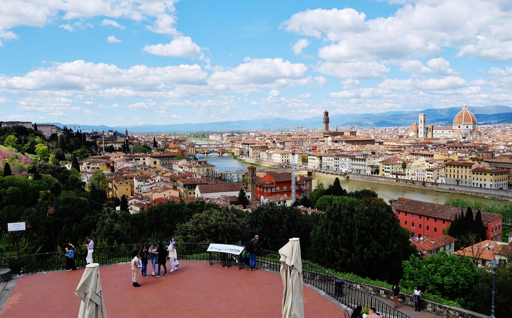
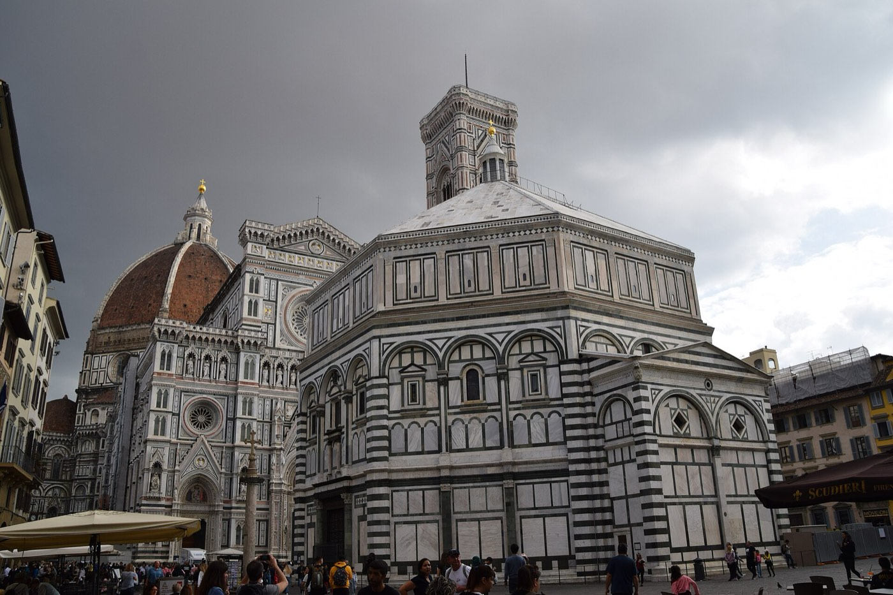
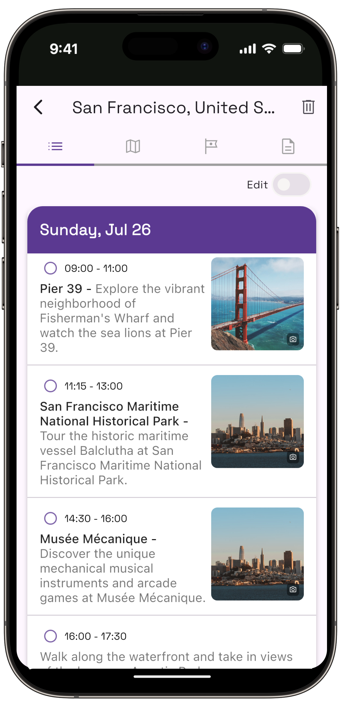
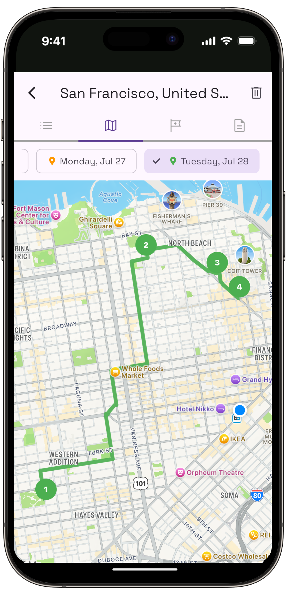

Florence · 3 days
Florence doesn't have Amsterdam's rings or Dubai's heat curve to sequence around. Its whole historic center fits inside a half-hour walk, so distance stops being the variable that organizes the trip. What replaces it: the Uffizi, the Accademia and the Dome climb are each a single, non-transferable timed reservation, and the Uffizi and the Palazzo Pitti, its closest indoor rival, both go dark on the same day, Monday. Miss that and a third of the trip has nothing bookable left standing. So the plan below locks the three reservations first, in whatever order the calendar hands them, and treats a Monday, if the trip has one, as the built-in outdoor day rather than a problem to solve. Here's that shape, plus how far ahead each ticket actually needs booking.

Florence's historic center is small enough that a fit walker can cross it end to end, Ponte Vecchio to the Duomo to Piazzale Michelangelo and back, in under an hour. That fact rules out the usual three-day puzzle. There's no neighborhood worth saving for its own day, no hill that only fits once, no transit map to route around. What decides the order instead is three separate booking systems that don't talk to each other. The Uffizi and the Accademia each sell timed entry slots that thin out weeks ahead in high season, and the climb up Brunelleschi's Dome is a mandatory, non-transferable reservation checked against a photo ID at the door. Miss the slot and there's no queuing your way in behind someone who has one. None of the three shares a calendar with the others, so this trip gets built backward from whichever slots you can actually get, not forward from a walking route.
There's a sharper edge to it. The Uffizi and the Palazzo Pitti, the Accademia's closest indoor equivalent across the river, both close on Mondays, and the Boboli Gardens behind the Pitti closes with it. A Monday inside a three-day Florence trip isn't a minor scheduling snag, it's a day with almost nothing bookable open at all. The plan below treats that day as a feature rather than a flaw: it's the day Brunelleschi's Dome (open Mondays), Ponte Vecchio, Piazzale Michelangelo and the Oltrarno's workshops absorb, while the galleries wait for a day they're actually open.
Three sights, three separate reservations, and two of them share a closure day. Florence is compact enough to cross on foot in under an hour, so this itinerary isn't organized around neighborhoods or transit, it's organized around locking the Uffizi, the Accademia and the Dome climb first. The Uffizi and the Palazzo Pitti (with the Boboli Gardens) are both dark on Mondays, so a Monday in the trip becomes the built-in day for the Dome climb, the free viewpoints and the Oltrarno instead of a problem to work around.
Book the earliest Uffizi slot the calendar allows, ideally close to a month out if there's a specific date in mind, and earlier still for anything between April and October, when timeslots sell out weeks ahead and the unbooked line at the ticket office can run past two hours. The gallery is open Tuesday to Sunday, 8:15am to 6:30pm, and closed Mondays, so this is the day to build around whatever slot the booking site actually offers rather than an ideal one. Once inside, there's no time limit on the visit itself, only the entry slot is fixed.
Walk straight out of the Uffizi and the day's second half is already there: Piazza della Signoria sits right at the museum's exit, with the Palazzo Vecchio's tower overhead and the Loggia dei Lanzi, a genuinely free, open-air sculpture gallery under a 14th-century arcade, running along one side of the square. Giambologna's Rape of the Sabines and Cellini's Perseus stand there unticketed, open around the clock, no line at all. It's the easiest possible pairing with a morning that otherwise runs entirely on someone else's clock.
Close the day at Ponte Vecchio, a five-minute walk south. It's a working bridge lined with jewelers, free to cross, open all hours, and calmer after the day-trip crowds thin out in the early evening, which is also when the light over the Arno gets good. No booking touches any of this half of the day; it exists specifically to absorb whatever time the Uffizi's slot didn't take.
One fixed reservation in the morning; everything after it is free and unticketed.

The Accademia keeps the same weekly rhythm as the Uffizi, Tuesday to Sunday, 8:15am to 6:50pm, last entry 30 minutes before close, closed Mondays, but books in 15-minute arrival windows rather than a single morning slot, and those windows sell out weeks in advance in busy periods for the same reason: it's the only place to see Michelangelo's David in person, and there is no version of this trip that skips booking it ahead.
From the Accademia, it's a flat seven-minute walk down Via Ricasoli to Piazza del Duomo, close enough that the two anchor the same day without needing a third booking to connect them. The cathedral's interior and the Baptistery are both accessible without a timed slot, but the climb up Brunelleschi's Dome is its own separate, mandatory reservation, non-transferable once issued, checked against a photo ID at the entrance since March 2025, and closed to medium and large bags, which go into the free cloakroom at Piazza Duomo 38/r beforehand. It's 463 steps with no elevator, arrive 15 minutes early and no more than 5 minutes late or the slot is gone.
Neither the Uffizi nor the Accademia queue teaches much about the Dome climb: it's a narrower, slower ascent than either gallery visit, and worth treating as its own block of the afternoon rather than something squeezed in on the way past. Close the day at Mercato Centrale or the stalls around San Lorenzo, a few minutes' walk north of the Duomo, open daily and the easiest dinner in the city to reach without planning around anything.
Two reservations today, seven minutes apart on foot.
Cross the Arno into the Oltrarno and the day shifts to the side of Florence with no timed tickets to plan around. San Frediano, the neighborhood's working-class core, is thick with artisan workshops, marbled-paper studios, family-run leather shops, and a bookbinder's window on Via delle Caldaie where the craftsman works in plain view for anyone who stops to watch, no appointment or charge involved. Pair it with the Brancacci Chapel's frescoes if the schedule allows a short visit.
If the day isn't a Monday, the Palazzo Pitti and its Boboli Gardens fit here, on the same side of the river and worth an afternoon, though not the half-day a slower visit deserves inside a three-day trip. Worth knowing: Boboli keeps its own extra wrinkle, closed not just on Mondays generally but specifically on the first and last Monday of every month even in months where the galleries are open, so check the calendar date, not just the day of the week, before counting on it.
If the day is a Monday, skip that pairing entirely and lean into what stays open regardless: the walk up to Piazzale Michelangelo, about 20 minutes from Ponte Vecchio, and San Miniato al Monte just above it, a working Romanesque basilica that's free to enter and rewards the extra climb with the quietest view in the city. Both card the same way every day of the week, so this is the block of the trip that never needs rearranging, whichever day it falls on.
Nothing here needs a reservation, which makes this the day to place wherever the schedule needs it.
| What | Booking window | So |
|---|---|---|
| Uffizi Gallery | Timed entry; sells out weeks ahead April–October | Book as soon as dates are fixed, especially in high season |
| Accademia Gallery | 15-minute arrival windows; sells out weeks ahead in high season | Lock this alongside the Uffizi, not after it |
| Brunelleschi's Dome climb | Mandatory, non-transferable slot; cannot be changed or cancelled once issued | Pick the date and time carefully the first time; there's no rebooking |
| Palazzo Pitti and Boboli Gardens | No timed entry, but closed Mondays; Boboli also closed the first and last Monday of every month | Don't plan this for a Monday, or check the calendar date if it's near month's end |
| Loggia dei Lanzi, Ponte Vecchio, Piazzale Michelangelo | No booking, free, open around the clock | The fallback for any day, especially a Monday |
Cutting deliberately beats rushing. These need more time than a three-day, three-reservation trip has:
Is 3 days enough for Florence?
For the essentials, yes. Three days covers the Uffizi, the Accademia and David, the Duomo complex and the Dome climb, Ponte Vecchio and Piazza della Signoria, and the Oltrarno's artisan streets. It doesn't stretch to a Tuscany day trip, the Bargello, or an unhurried half-day in the Boboli Gardens, each of which needs time this itinerary has already committed elsewhere.
How far ahead do I need to book Uffizi tickets?
Aim for close to a month out if the dates are fixed, and earlier during April through October, when timed slots sell out weeks in advance and the unbooked line at the ticket office can run past two hours. Once inside there's no time limit, only the entry slot itself is fixed.
Do I need to book Accademia Gallery tickets in advance?
Yes. The Accademia sells 15-minute arrival windows rather than a single morning slot, and they sell out weeks ahead in busy periods. It's the only place to see Michelangelo's David in person, so this is not a ticket worth leaving to a walk-up queue.
What happens if my Florence trip includes a Monday?
The Uffizi, the Accademia and the Palazzo Pitti (with the Boboli Gardens) are all closed. Brunelleschi's Dome climb, the Duomo's interior, Ponte Vecchio, Piazzale Michelangelo and the Oltrarno's workshops stay open, so this itinerary treats a Monday as the built-in outdoor day rather than a day to work around.
Is the Brunelleschi Dome climb worth it, and how do I book it?
It's a separate, mandatory, non-transferable timed slot, booked directly through the Opera del Duomo or an authorized reseller, checked against a photo ID since March 2025. It's 463 steps with no elevator and medium or large bags aren't allowed inside, they go into the free cloakroom at Piazza Duomo 38/r first. Worth it for the close-up view of the dome's construction and the rooftop panorama, but pick the date and time carefully the first time, since the reservation can't be changed or cancelled once issued.
Is Florence walkable, or do I need to plan around transit?
Walkable almost entirely. The historic center is small enough to cross end to end in under an hour, and the Uffizi to the Accademia to the Duomo are all a flat 10-to-20-minute walk apart. This itinerary never plans around getting somewhere, only around getting into something.
Should I skip the Uffizi or the Accademia if I only have time for one?
They cover different ground rather than overlapping: the Uffizi is Renaissance painting at scale, the Accademia is essentially one visit built around Michelangelo's David plus a smaller collection. Skipping either means skipping a genuinely different half of Florence's art, not a duplicate of the other.
Travelling to Florence? Plan your trip around your real arrival and departure times.
Download iOS App
